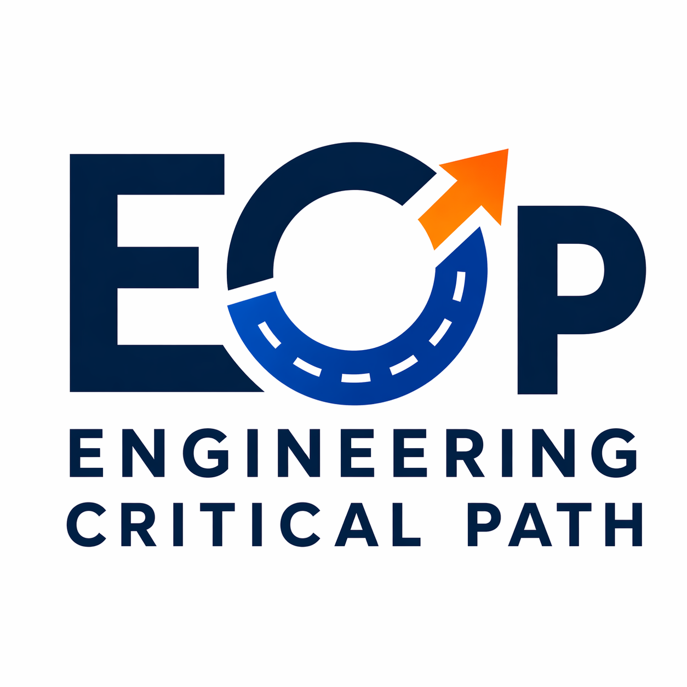

Platforms | Quality | Leadership | Fun
See It. Hear It. Do It.
Engineering perspectives on mission-critical systems, platform engineering, quality at scale, and enterprise transformation.
Leadership
Practical thinking on engineering direction, delivery confidence, and decision-making.
Platforms
Exploring platform engineering, developer enablement, automation, and scalable foundations.
Quality
Modern quality engineering for complex, distributed, and mission-critical systems.
Fun
Because engineering should stay curious, creative, and enjoyable.